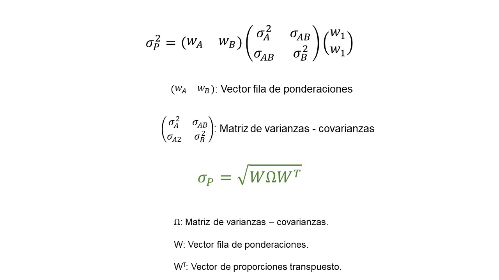

Volatilidad portafolio de inversión¶
La varianza es el cuadrado de la dispersión alrededor de la media (\(\sigma^2\)).
La desviación estándar, o también llamada volatilidad, es la raíz cuadrada de la varianza. Tiene las mismas unidades que la variable original.
Forma polinomial¶
Varianza entre dos activos.¶
\(\sigma_p^2:\) varianza del portafolio de inversión.
\(\sigma_A^2:\) varianza activo A.
\(\sigma_B^2:\) varianza activo B.
\(w_A^2:\) proporción de inversión en A al cuadrado.
\(w_B^2:\) proporción de inversión en B al cuadrado.
\(w_A:\) proporción de inversión en A.
\(w_B:\) proporción de inversión en B.
\(\sigma_{A,B}:\) covarianza entre A y B.
Volatilidad de dos activos.¶
\(\sigma_p:\) volatilidad o desviación estándar del portafolio de inversión.
\(\rho_{A,B}:\) coeficiente de correlación entre A y B.
Ejemplo:¶
Volatilidad |
Proporción de inversión |
|
|---|---|---|
Acción A |
2% |
70% |
Acción B |
5% |
30% |
volatilidad_portafolio = sqrt(0.7^2*0.02^2 + 0.3^2*0.05^2 + 2*0.7*0.3*0.02*0.05*0.67)
volatilidad_portafolio
Volatilidad del portafolio de inversión de 2,65%.
Ejemplo:¶
Volatilidad |
Proporción de inversión |
|
|---|---|---|
Acción A |
2% |
30% |
Acción B |
5% |
70% |
volatilidad_portafolio = sqrt(0.30^2*0.02^2 + 0.70^2*0.05^2 + 2*0.30*0.70*0.02*0.05*0.67)
volatilidad_portafolio
Volatilidad del portafolio de inversión de 3,93%.
Volatilidad de tres activos.¶
Ejemplo:¶
Volatilidad |
Proporción de inversión |
|
|---|---|---|
Acción A |
2% |
20% |
Acción B |
4% |
50% |
Acción C |
3,2% |
30% |
Matriz de coeficientes de correlación:¶
Acción A |
Acción B |
Acción C |
|
|---|---|---|---|
Acción A |
1 |
0,52 |
0,32 |
Acción B |
0,52 |
1 |
0,48 |
Acción C |
0,42 |
0,48 |
1 |
volatilidad_portafolio = sqrt(0.20^2*0.02^2 + 0.50^2*0.04^2 + 0.30^2*0.032^2 + 2*0.20*0.50*0.02*0.04*0.52 + 2*0.20*0.30*0.02*0.032*0.42 + 2*0.50*0.30*0.04*0.032)
volatilidad_portafolio
Volatilidad del portafolio de inversión de 3,17%.
Forma matricial¶
Varianza entre dos activos¶

Ejemplo:¶
Volatilidad |
Proporción de inversión |
|
|---|---|---|
Acción A |
2% |
70% |
Acción B |
5% |
30% |
Matriz de varianzas-covarianzas¶
Acción A |
Acción B |
|
|---|---|---|
Acción A |
0,0010196809 |
0,0005939468 |
Acción B |
0,0005939468 |
0,0008155434 |
Vector de proporciones.¶
proporciones = c(0.70, 0.30)
proporciones
- 0.7
- 0.3
Es importante conocer si el vector de proporciones está en posición
horizontal o vertical. La ecuación de volatilidad en forma matricial,
indica que primero el vector de proporciones debe estár horizontal y
después vertical.
Matriz de varianzas-covarianzas¶
Si utilizamos cbind, entonces cada vector será una columna.
vector_1 = c(0.0010196809, 0.0005939468)
vector_2 = c(0.0005939468, 0.0008155434)
covarianzas = cbind(vector_1, vector_2)
covarianzas
| vector_1 | vector_2 |
|---|---|
| 0.0010196809 | 0.0005939468 |
| 0.0005939468 | 0.0008155434 |
volatilidad_portafolio = sqrt(sum(proporciones*covarianzas*t(proporciones)))
volatilidad_portafolio
Error in proporciones * covarianzas * t(proporciones): arreglos de dimensón no compatibles
Traceback:
Volatilidad del portafolio de inversión de 4,39%.
Ejemplo con histórico de precios¶
Importar datos.¶
datos = read.csv("Cuatro acciones 2020.csv", sep = ";", dec = ",", header = T)
Matriz de rendimientos.¶
rendimientos = diff(log(precios))
Volatilidad de cada acción.¶
volatilidades = apply(rendimientos, 2, sd)
volatilidades
- ECO
- 0.0319324424190137
- PFAVAL
- 0.0285577211893029
- ISA
- 0.0237292026947701
- NUTRESA
- 0.0140104740592151
Matriz de varianzas-covarianzas¶
covarianzas = cov(rendimientos)
covarianzas
| ECO | PFAVAL | ISA | NUTRESA | |
|---|---|---|---|---|
| ECO | 0.0010196809 | 0.0005939468 | 0.0001160327 | 0.0001493216 |
| PFAVAL | 0.0005939468 | 0.0008155434 | 0.0001564360 | 0.0001322689 |
| ISA | 0.0001160327 | 0.0001564360 | 0.0005630751 | 0.0001519996 |
| NUTRESA | 0.0001493216 | 0.0001322689 | 0.0001519996 | 0.0001962934 |
Volatilidad del portafolio de inversión (forma matricial).¶
volatilidad_portafolio = sqrt(sum(proporciones*covarianzas*t(proporciones)))
volatilidad_portafolio
Error in proporciones * covarianzas * t(proporciones): arreglos de dimensón no compatibles
Traceback:
Para corregir el error anterior, debemos poner en la primera
multiplicación %*%, que en código de R se utiliza para
multiplicación de vectores y matrices.
volatilidad_portafolio = sqrt(sum(proporciones%*%covarianzas*t(proporciones)))
volatilidad_portafolio
Volatilida del portafolio de inversión de 1,897% diaria.
Volatilidad del portafolio de inversión a partir de los rendimientos de las acciones.¶
Rendimientos del portafolio de inversión.¶
rendimientos_portafolio = vector()
for(i in 1:nrow(rendimientos)){
rendimientos_portafolio[i] = sum(rendimientos[i,]*proporciones)
}
Volatilidad del portafolio de inversión¶
volatilidad_portafolio = sd(rendimientos_portafolio)
volatilidad_portafolio
Se obtiene el mismo resultado que por la forma matricial. Este método se pude usar sólo cuando se tienen los históricos de precios.